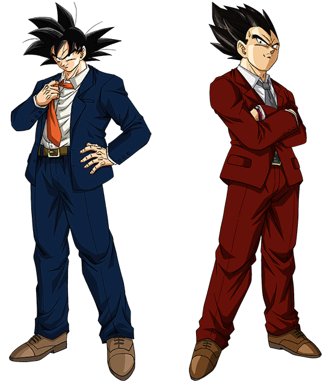

¿Quiénes somos?

- Son Goku
- Es un guía turístico experimentado de la agencia de viajes del sur de Chile, especializado en
excursiones de aventura y senderismo por la Patagonia.
- Ha vivido en la región sur de Chile desde hace varios años y conoce muy bien la cultura y
costumbres locales.
- Le gusta llevar a los turistas a conocer lugares poco conocidos y fuera de los circuitos
turísticos convencionales.
- Además de su experiencia en turismo, Goku también es un gran cocinero y se encarga de preparar
los almuerzos y cenas en las excursiones.
- Es muy amigable y cercano con los turistas, lo que hace que se sientan cómodos y disfruten al
máximo su experiencia en el sur de Chile.
- Vegeta
- Es un experto en deportes de aventura y es el encargado de liderar las excursiones de rafting y
kayak en la agencia de viajes del sur de Chile.
- Ha vivido en la región sur de Chile durante varios años y conoce muy bien los ríos y lagos de la
zona.
- Es muy exigente en cuanto a la seguridad y la preparación de los turistas antes de cada
excursión.
- Aunque es un líder exigente, Vegeta también se preocupa por que los turistas tengan una
experiencia inolvidable y disfruten de los paisajes naturales del sur de Chile.
- Es muy disciplinado y organizado, lo que hace que las excursiones sean siempre seguras y bien
planificadas.